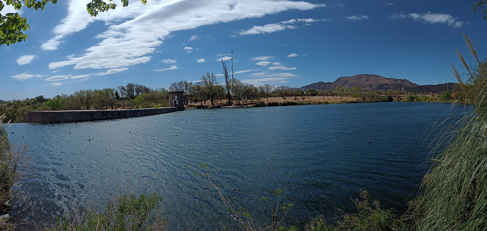

Turismo San Luis
Inicio
Lugares
Contacto
Aqui encontraras los lugares mas lindos de San Luis

Descarga los mapas turisticos
La ciudad
Villa Mercedes
El Trapiche
Villa de Merlo
Potrero de los Funes
San Francisco